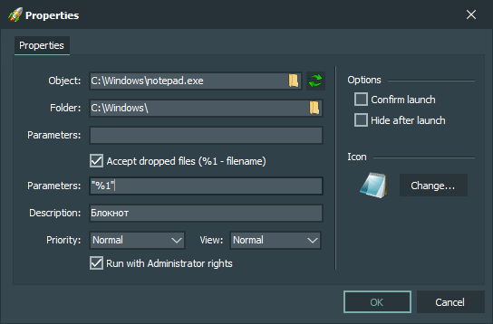

Interface elements:
-
Object
Contains the path to the executable.
-
Folder
Contains the path to the working directory of the executable.
-
Parameters (first)
Contains the command line switches used to run the executable.
-
Accept dropped files
Process the file dragged to the button and pass it to the executable file.
-
Parameters (second)
Contains the command line switches used to run the executable. If the "Accept dropped files" option is enabled, the name of the file dragged to the button will be passed as the first command line switch - for this, the regular expression "%1" is used.
-
Description
Contains a comment for the executable file. It is displayed as a tooltip when you hover the mouse cursor over the button with the executable file, as well as in the status bar of the main application window.
-
Priority
Contains the priority value with which the executable file will run.
-
View
Contains the state of the window with which the executable will be launched.
-
Run with Administrator rights
Run the executable file with Administrator rights.
-
Confirm launch
Ask for confirmation to run an executable.
-
Hide after launch
Hide the main application window after running an executable.
-
«Change (icon)» button
Opens a window for changing the icon of the button.
-
«OK» button
Confirms changing the properties of the selected button.
-
«Cancel» button
Doesn't confirm changing the properties of the selected button.
Hotkeys:
-
Alt + F4
Pressing this hotkey closes button properties window without applying button properties changes.
-
Enter
Pressing this hotkey applies button properties changes and closes button properties window.
-
Esc
Pressing this hotkey closes button properties window without applying button properties changes.